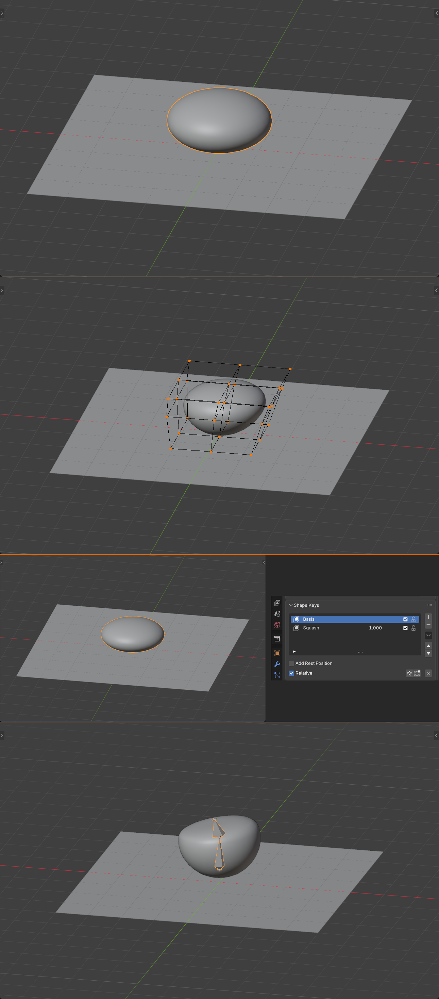
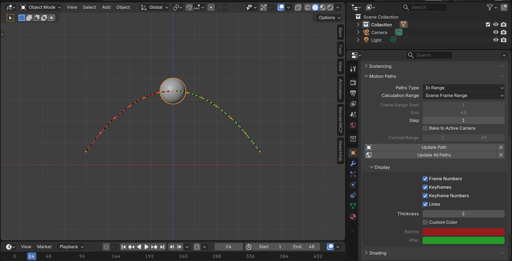
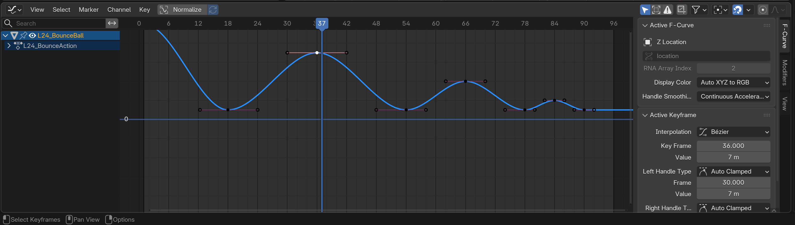
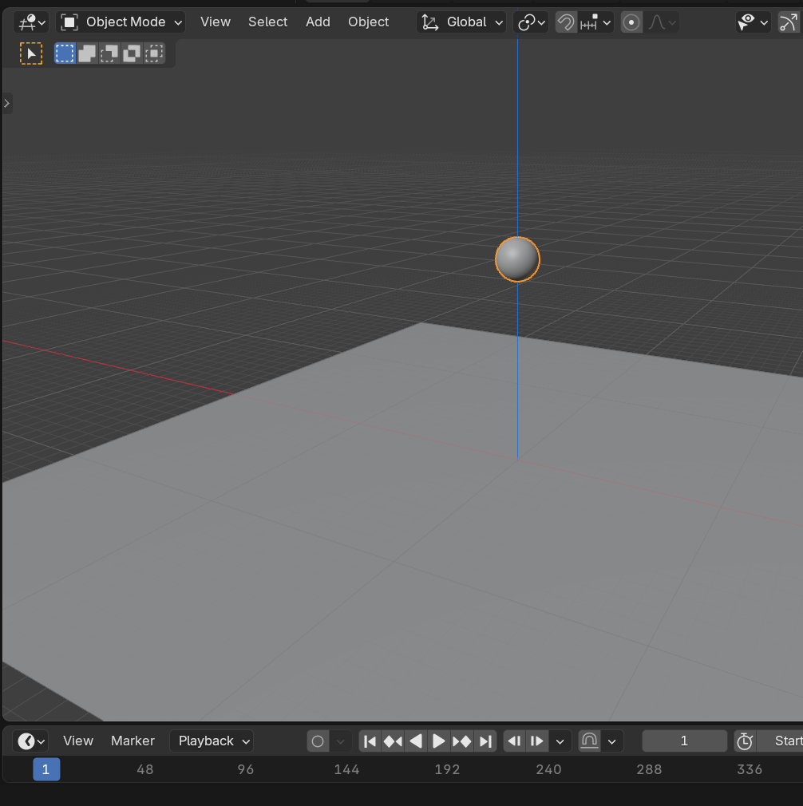
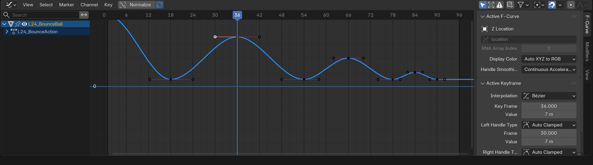

🎯 Learning Objectives
By the end of this lesson, you will be able to:
- Understand and apply the 12 principles of animation
- Control timing and spacing for believable motion
- Create animations with proper weight and physics
- Use anticipation, follow-through, and overlapping action
- Apply squash and stretch for organic movement
- Understand the difference between linear and natural motion
- Analyze and critique animation quality
📋 What You'll Learn
- Time Required: 90-120 minutes
- Difficulty: Beginner-Intermediate
- Prerequisites: Basic Blender knowledge, Lesson 23 (Camera animation helps)
- Project: Bouncing ball animation demonstrating principles
In This Lesson
🎭 What Makes Animation Work
Animation is the illusion of life. It's not just about making things move—it's about making them move in a way that feels alive, believable, and engaging. Understanding what separates good animation from bad is the foundation of everything that follows.
The Illusion of Movement
🎞️ How Animation Works
The fundamental principle:
- Animation is a series of still images shown rapidly
- 24-30 frames per second creates smooth motion
- Human brain fills in the gaps (persistence of vision)
- We perceive continuous movement, not individual frames
Why some animation feels "wrong":
- Movement that doesn't obey physics feels fake
- Constant-speed motion looks robotic
- Objects that don't have weight look floaty
- Lack of anticipation makes actions feel sudden and jarring
What makes animation feel "right":
- Follows real-world physics (gravity, momentum, friction)
- Has acceleration and deceleration (nothing moves at constant speed)
- Objects have apparent mass and weight
- Actions telegraph before they happen (anticipation)
- Movement has follow-through and overlapping action
Animation vs Real Life
🎨 The Animator's Choice
Realistic animation:
- Closely mimics real-world physics and timing
- Believable, grounded, documentary feel
- Common in: Architectural viz, product demos, dramatic films
- Goal: Make viewers forget they're watching animation
Stylized animation:
- Exaggerates movement for effect
- More squash/stretch, faster reactions, bigger arcs
- Common in: Cartoons, commercials, games
- Goal: Entertain, engage, create memorable motion
The spectrum:
- Most animation falls somewhere between realistic and stylized
- Even "realistic" animation is subtly exaggerated for clarity
- Pure realism can look boring—perfect isn't always best
- The art is knowing how much to push movement
Important distinction:
- Stylized ≠ Bad animation
- Pixar films are highly stylized but impeccably animated
- The principles apply whether realistic or cartoony
- Good animation follows principles; bad animation ignores them
Why Learn Animation Principles
💡 The Foundation of All Movement
These principles apply to everything:
- Object animation: Bouncing balls, swinging pendulums, falling objects
- Camera animation: You already used these in Lesson 23 (easing = timing principle)
- Character animation: Walking, jumping, acting—built on these fundamentals
- UI/UX animation: Buttons, menus, transitions in interfaces
- Procedural animation: Even automated animation benefits from principles
Developed by Disney animators:
- The "12 Principles" codified in 1981 by Frank Thomas and Ollie Johnston
- Based on decades of trial and error at Disney Studios
- Timeless—apply equally to hand-drawn, CG, stop-motion
- Every professional animator learns these
Why they matter in 3D:
- 3D gives you total control—but also requires intentional choices
- Computer won't add weight or anticipation for you
- Easy to create technically correct but lifeless animation
- Principles separate professional animation from amateur
The Animation Mindset
🧠 Thinking Like an Animator
Key questions to always ask:
- "Does this have weight?" Heavy objects move slower, accelerate gradually
- "Is there anticipation?" Big actions need wind-up
- "Does the timing feel right?" Fast for excitement, slow for drama
- "Are the arcs natural?" Organic objects don't move in straight lines
- "Is there follow-through?" Nothing stops instantly
The animator's workflow:
- Plan: Thumbnail sketches, video reference, mental rehearsal
- Block: Major poses/positions, rough timing
- Refine: Add principles (anticipation, squash/stretch, etc.)
- Polish: Smooth curves, perfect timing
- Review: Watch repeatedly, iterate
Study real motion:
- Watch how people walk, how balls bounce, how cloth drapes
- Record video reference (phone camera is perfect)
- Slow-motion reveals details you'd miss at normal speed
- The best animators are keen observers of real life
💡 Animation is Acting: Whether you're animating a bouncing ball or a speaking character, you're performing. The ball "acts" heavy or light, energetic or tired. A walking character "acts" happy or sad through posture and timing. Good animators aren't just technical artists—they're performers who use 3D objects as their actors. Every animation decision is a performance choice. That mindset—"How would this object move if it were alive?"—is what separates mechanical motion from animated life.
📚 The 12 Principles of Animation
These twelve principles, developed by Disney's legendary animators, are the grammar of animation. Just as writers learn grammar before crafting stories, animators learn these principles before creating movement. Let's explore each one.
Principle 1: Squash and Stretch
🎾 Flexibility and Weight
What it is:
- Objects deform when moving or impacted
- Squash = compression (ball hits ground)
- Stretch = extension (ball in mid-air)
- Defines object's rigidity and mass
Why it matters:
- Makes objects feel alive and flexible
- Adds sense of speed (stretch = fast movement)
- Communicates material properties (rubber squashes more than wood)
- Without it, objects look stiff and dead
Important rule: Maintain volume
- When object squashes, it gets wider
- When it stretches, it gets thinner
- Total volume stays roughly constant
- Violation looks wrong—ball can't shrink when squashed
Amount depends on material:
- Rubber ball: Extreme squash/stretch (very flexible)
- Bowling ball: Minimal squash/stretch (very rigid)
- Human face: Moderate squash/stretch (organic tissue)
- Metal robot: Almost none (hard surface)
Principle 2: Anticipation
⚡ The Wind-Up Before the Action
What it is:
- Movement in opposite direction before main action
- Character crouches before jumping
- Arm pulls back before throwing
- Telegraphs what's about to happen
Why it matters:
- Prepares viewer for action—nothing happens "suddenly"
- Makes actions feel more powerful (bigger wind-up = bigger payoff)
- Mimics real physics (need to load energy before release)
- Without it, actions feel jarring and confusing
Examples in real life:
- Baseball pitcher winds up before throwing
- Golfer pulls club back before swing
- Person takes breath before shouting
- Cat wiggles butt before pouncing
Amount varies by action:
- Large anticipation: Jumping, throwing, swinging—big movements
- Small anticipation: Picking up object, turning head
- No anticipation: Surprise reactions, being hit
Principle 3: Staging
🎭 Directing Attention
What it is:
- Presenting action clearly so viewer understands it
- One thing happens at a time (or one main thing with support)
- Camera angle, timing, and composition work together
- Avoid competing actions—focus viewer's attention
Why it matters:
- If viewer doesn't see action, it didn't happen
- Multiple simultaneous actions confuse viewer
- Clear staging = clear storytelling
- Professional animation guides attention deliberately
Staging techniques:
- Silhouette test: Action should read in silhouette
- One action at a time: Finish action A before starting action B
- Camera position: Frame action clearly (from Lesson 21: Composition)
- Contrast: Moving object against still background stands out
Related to camera work:
- This principle heavily overlaps with cinematography
- Composition, camera angle, depth of field all serve staging
- You already learned this in Module 5!
Principle 4: Straight Ahead vs Pose-to-Pose
🎬 Animation Approaches
Straight Ahead Action:
- Animate frame-by-frame from start to finish
- Creates fluid, spontaneous motion
- Good for: Fire, water, effects, chaotic movement
- Con: Hard to control timing and final result
Pose-to-Pose:
- Create key poses first, fill in between later
- Start → middle → end, then add in-betweens
- Good for: Character animation, controlled movements
- Pro: Total control over timing and final poses
In Blender (3D animation):
- Pose-to-Pose is standard approach (keyframes = key poses)
- You set important poses, computer interpolates between
- This is why keyframe workflow exists
- Straight ahead still used for effects/simulations
The workflow:
- Blocking: Create main poses at key frames
- Breakdown: Add poses between key poses
- In-betweening: Computer handles or animator refines
- Polish: Adjust timing, spacing, arcs
Principle 5: Follow-Through and Overlapping Action
🌊 Different Parts Move at Different Rates
Follow-Through:
- Body parts continue moving after main body stops
- Hair, clothing, tails keep going (momentum)
- Example: Character stops running, hair swings forward
- Creates realistic feeling of weight and momentum
Overlapping Action:
- Different body parts move at different times
- Example: Arm starts moving before torso fully stops
- Creates natural, fluid motion
- Opposite: Everything moves together = robotic
Why it matters:
- Real objects aren't rigid—parts have independence
- Makes characters feel alive, not like puppets
- Adds richness and complexity to animation
- Without it, animation feels stiff and mechanical
Practical examples:
- Dog tail: Follows body movement with delay
- Character's coat: Swings as character turns
- Ponytail: Continues bouncing after head stops
- Flexible antenna: Wobbles after object stops
Principle 6: Slow In and Slow Out
⚡ Ease In and Ease Out
What it is:
- Objects accelerate gradually (slow start)
- Objects decelerate gradually (slow stop)
- Rarely move at constant speed
- More frames near start/end poses, fewer in middle
Why it matters:
- Matches real physics—nothing instantly jumps to full speed
- Makes movement feel organic and natural
- Constant speed = robotic, mechanical
- This is the "easing" you learned in Lesson 23!
You already know this!
- Camera animation: Bezier interpolation = slow in/slow out
- Same principle, different application
- Applies to ALL animation, not just cameras
Amount varies by situation:
- Heavy object: Long slow-in and slow-out (takes time to accelerate/stop)
- Light object: Quick slow-in/out (reacts quickly)
- Impact: No slow-in at collision point (sudden stop)
Principle 7: Arcs
🌈 Natural Paths of Movement
What it is:
- Most natural movements follow arced paths, not straight lines
- Arms swing in arcs, heads turn in arcs, jumps follow parabolic arcs
- Joints and pivots create circular motion
- Straight-line movement feels mechanical and unnatural
Why it matters:
- Living things rarely move in perfect straight lines
- Even "straight" walks have subtle arcs (hips sway, arms swing)
- Arcs make motion feel organic and believable
- Without arcs, animation looks robotic
Examples of arcs:
- Throwing ball: Arm follows arc from back to release
- Head turn: Face rotates around neck pivot (circular arc)
- Walking: Feet follow arc from back to front
- Pendulum: Swings in perfect arc
- Bouncing ball: Parabolic arcs between bounces
Checking arcs in Blender:
- Object Properties → Motion Paths → Calculate
- Shows dotted line of object's trajectory
- Should be smooth curves, not jagged lines
- Adjust keyframes to smooth out path
When straight lines work:
- Mechanical objects (robots, machines)
- Fast, aggressive movements (punches, strikes)
- Intentional stylization
- But even these usually have subtle arcs
Principle 8: Secondary Action
🎭 Supporting the Main Action
What it is:
- Additional movements that support the main action
- Character walks (main) while swinging arms (secondary)
- Character talks (main) while eyebrows move (secondary)
- Adds richness and personality to animation
Why it matters:
- Makes characters feel alive and multi-dimensional
- Real people do multiple things simultaneously
- Secondary action adds personality and detail
- Without it, animation feels simple and one-note
Important rule: Secondary never dominates primary
- Secondary action supports, doesn't compete
- If secondary is too big, it becomes distracting
- Viewer should focus on main action
- Think "accent" not "spotlight"
Examples:
- Character walking:
- Primary: Legs moving
- Secondary: Arms swinging, head bobbing, clothing flowing
- Character reaching for object:
- Primary: Arm extending
- Secondary: Eyes tracking object, mouth opening slightly
- Ball with tail/ribbon:
- Primary: Ball moving
- Secondary: Tail trailing behind, following with delay
Principle 9: Timing
⏱️ The Speed and Rhythm of Movement
What it is:
- Number of frames used for an action
- Fewer frames = fast movement
- More frames = slow movement
- Controls the feeling and weight of animation
Why it matters:
- Timing defines the character and mood
- Fast timing = energetic, light, urgent
- Slow timing = heavy, dramatic, contemplative
- Wrong timing makes animation feel off
Timing communicates weight:
- Heavy object (bowling ball): Slow timing, takes time to accelerate/stop
- Light object (balloon): Fast timing, quick reactions
- Medium object (basketball): Moderate timing
- Same motion, different timing = different perceived weight
Timing communicates emotion:
- Happy character: Quick, bouncy timing
- Sad character: Slow, dragging timing
- Angry character: Sharp, sudden timing
- Scared character: Fast, erratic timing
Frame counts for common actions (at 24fps):
- Eye blink: 3-6 frames (very fast)
- Head turn: 8-12 frames
- Arm gesture: 12-24 frames
- Walk cycle: 12-24 frames per step
- Jump: 24-48 frames total
- These are guidelines—adjust for character and mood
Principle 10: Exaggeration
🎪 Pushing Beyond Reality
What it is:
- Taking realistic movement and pushing it further
- Making actions bigger, faster, more extreme
- Not randomness—amplifying what's already there
- Creates appeal and entertainment value
Why it matters:
- Pure realism can be boring and hard to read
- Subtle real-life movements don't translate to screen
- Exaggeration makes actions clear and entertaining
- Even "realistic" animation is subtly exaggerated
Amount depends on style:
- Subtle exaggeration (5-10%): Realistic animation, live-action VFX
- Moderate exaggeration (20-50%): Pixar style, most feature animation
- Heavy exaggeration (100%+): Looney Tunes, slapstick, commercials
- Extreme exaggeration (500%+): Cartoon Network style, anime
What to exaggerate:
- Poses: Push poses further (deeper squat, wider stretch)
- Expressions: Bigger smiles, wider eyes
- Movements: Faster reactions, bigger arcs
- Squash and stretch: More deformation
The rule of caricature:
- Find what makes the action unique
- Amplify that characteristic
- Example: Bouncy character → make bounces even bouncier
- Heavy character → make them even slower and heavier
Principle 11: Solid Drawing
🎨 Understanding Form and Space
What it is (in 2D animation context):
- Understanding volume, weight, and balance in drawings
- Making flat drawings feel three-dimensional
- Avoiding "twins" (symmetrical, flat poses)
- Originally about draftsmanship skills
In 3D animation (how it translates):
- Understanding form, weight, and balance in poses
- Avoiding stiff, symmetrical poses
- Using asymmetry and depth
- Thinking about center of gravity and balance
Why it matters in 3D:
- 3D gives you automatic perspective, but not automatic good poses
- Computer handles geometry—you handle composition and staging
- Understanding form helps create appealing poses
- Balance and weight distribution are critical
Practical applications in Blender:
- Avoid symmetrical poses: Shift weight to one side
- Use contrapposto: Hips and shoulders at different angles
- Consider center of gravity: Poses should feel balanced
- Silhouette test: Pose should read clearly in silhouette
Principle 12: Appeal
✨ Making Animation Engaging
What it is:
- Creating animation that's pleasing to watch
- Not just "pretty"—includes villains and monsters
- Clear, interesting, engaging design and movement
- Charisma and personality
Why it matters:
- Technically perfect animation can still be boring
- Appeal makes viewers want to keep watching
- Characters need personality, objects need character
- This is the "magic ingredient" that's hardest to define
Elements of appeal:
- Clear design: Simple, readable silhouettes
- Personality: Distinctive movement style
- Balance of detail: Not too complex, not too simple
- Symmetry/asymmetry balance: Interesting but not chaotic
- Expressiveness: Clear emotions and intentions
Creating appeal in animation:
- Variety: Mix of fast and slow, big and small movements
- Contrast: Sharp vs smooth, rigid vs flexible
- Clarity: Viewer always knows what's happening
- Confidence: Commit to choices, avoid tentative movement
The indefinable quality:
- Appeal is partly subjective—what works for one audience may not for another
- Develops with experience and observation
- Study animations you love—what makes them appealing?
- Practice, iteration, feedback all build appeal instincts
The Principles Working Together
🎼 The Symphony of Animation
Principles rarely work in isolation:
- A single bouncing ball uses 6+ principles simultaneously
- Squash and stretch (deformation)
- Slow in/slow out (easing at peak)
- Arcs (parabolic trajectory)
- Timing (speed communicates weight)
- Anticipation (slight squash before bounce)
- Follow-through (stretch after leaving ground)
Layering principles creates depth:
- Start with one principle (timing)
- Add another (arcs)
- Layer in more (squash/stretch, anticipation)
- Each layer increases believability
Don't try to apply all at once:
- Start simple—block basic motion
- Add principles one at a time
- Refine and iterate
- Masters make it look effortless because they've practiced each principle individually
💡 Principles are Tools, Not Rules: The 12 principles aren't rigid laws—they're guidelines developed through decades of experience. You can break them intentionally for effect. Robotic character? Skip squash and stretch. Surprise moment? Skip anticipation. But you should understand the principles deeply before breaking them. Picasso mastered realistic painting before inventing Cubism. Understand the rules, practice them religiously, then—when appropriate—break them with purpose. That's the path from student to artist.
⏱️ Timing and Spacing
While timing is one of the 12 principles, it's so fundamental that it deserves deeper exploration. Timing and spacing together define the entire feel of your animation—fast or slow, smooth or choppy, weighty or floaty.
Understanding Timing
🕐 Duration of Movement
Timing defined:
- How many frames an action takes
- 10 frames = fast action
- 100 frames = slow action
- Same distance traveled, different durations = different feeling
Timing controls perception:
- Weight: Heavy = slow, light = fast
- Mood: Energetic = fast, contemplative = slow
- Urgency: Urgent = fast, relaxed = slow
- Material: Rubber = bouncy (fast), metal = dense (slow)
Frame counts at 24fps (guidelines):
- Very fast (1-6 frames): Blinks, reactions, impacts
- Fast (6-12 frames): Quick gestures, snappy movements
- Medium (12-24 frames): Normal actions, walks, reaches
- Slow (24-48 frames): Heavy objects, dramatic moments
- Very slow (48+ frames): Extremely heavy, contemplative, or exaggerated
Understanding Spacing
📏 Distance Between Frames
Spacing defined:
- How far object moves between frames
- Large spacing = fast movement (object jumps far)
- Small spacing = slow movement (object barely moves)
- Spacing variations create acceleration/deceleration
Visualizing spacing:
- Imagine drawing object position on each frame
- Even spacing: Dots evenly distributed (constant speed)
- Increasing spacing: Dots farther apart (accelerating)
- Decreasing spacing: Dots closer together (decelerating)
Spacing patterns:
- Linear (even spacing):
- · · · · · · · · (equal distances)
- Constant speed—robotic, mechanical
- Rarely desired except for machines
- Ease in (slow to fast):
- ·· · · · · (increasing spacing)
- Starts slow, accelerates
- Falling object, starting movement
- Ease out (fast to slow):
- · · · · · ·· (decreasing spacing)
- Starts fast, decelerates
- Coming to rest, catching object
- Ease in/out (slow-fast-slow):
- ·· · · · · · · ·· (increase then decrease)
- Most natural motion
- Default for most animations
Timing and Spacing Together
🎯 The Complete Picture
Both control the same thing:
- Timing = total frames used
- Spacing = position changes per frame
- Together they define velocity and acceleration
- Can't separate them—both matter equally
Example: Ball traveling 10 units
- Fast timing, even spacing: 10 frames, 1 unit per frame = fast constant speed
- Fast timing, ease in/out: 10 frames, varied spacing = fast with acceleration
- Slow timing, even spacing: 40 frames, 0.25 units per frame = slow constant speed
- Slow timing, ease in/out: 40 frames, varied spacing = slow with acceleration
Timing + Spacing = Character:
- Bouncy character: Fast timing, extreme spacing variations
- Heavy character: Slow timing, gradual spacing changes
- Robotic character: Moderate timing, even spacing (no ease)
- Organic character: Varied timing, smooth spacing transitions
Common Timing Mistakes
⚠️ What Goes Wrong
Mistake 1: Everything same speed (monotonous)
- All actions take same number of frames
- Quick gesture = 24 frames, slow gesture = 24 frames
- Creates boring, predictable rhythm
- Solution: Vary timing—fast and slow create contrast
Mistake 2: Linear spacing (robotic)
- Using linear interpolation (constant speed)
- Objects move like programmed machines
- Lacks organic feel
- Solution: Always use easing (Bezier curves in Blender)
Mistake 3: Too fast (floaty)
- Object moves too quickly for its apparent mass
- Heavy object that moves like balloon
- Breaks immersion
- Solution: Slow down timing for heavier objects
Mistake 4: Too slow (draggy)
- Light object that moves like it's underwater
- Creates boring, sluggish feeling
- Viewer loses interest
- Solution: Speed up timing for lighter objects
Mistake 5: Inconsistent timing (confusing weight)
- Same object moves fast, then slow, with no reason
- Viewer can't figure out how heavy object is
- Breaks believability
- Solution: Establish weight early, stay consistent
Timing Reference Guidelines
✅ Frame Count Quick Reference (24fps)
Human actions:
- Eye blink: 3-4 frames
- Head turn (small): 6-8 frames
- Head turn (large): 12-16 frames
- Arm raise: 8-12 frames
- Step (walk): 12 frames per step
- Jump (total): 24-36 frames
Object actions:
- Ball bounce (small rubber): 6-8 frames per bounce
- Ball bounce (basketball): 12-16 frames per bounce
- Ball bounce (bowling ball): 24+ frames per bounce
- Door swing open: 12-18 frames
- Book drop: 8-12 frames
Remember: These are starting points
- Adjust for mood, weight, style
- Heavy = add frames
- Light = subtract frames
- Dramatic = slower
- Energetic = faster
💡 Timing and Spacing: The Invisible Craft: When timing and spacing are perfect, viewers don't think about them—they just feel right. But when they're off, even slightly, something feels wrong even if viewers can't articulate what. This is the invisible craft of animation. Beginning animators often rush to add fancy techniques—squash and stretch, exaggeration, overlapping action. But professionals obsess over timing and spacing first. Get those right and even a simple bouncing ball becomes hypnotic. Get them wrong and even the most elaborate character animation falls flat. Master timing and spacing, and you've mastered 80% of animation.
⚖️ Weight and Physics
Weight is one of the most important things to communicate in animation. Get the weight wrong and nothing else matters—viewers will immediately sense something's off. Let's learn how to make objects feel heavy, light, or anywhere in between.
Communicating Weight Through Animation
🏋️ Making Objects Feel Heavy or Light
Weight is conveyed through timing and effort:
- We don't see weight directly—we infer it from motion
- Heavy objects move slowly, resist change
- Light objects move quickly, react easily
- Animation timing creates perception of mass
Key factors that communicate weight:
- Acceleration: Heavy objects accelerate slowly
- Deceleration: Heavy objects take time to stop
- Impact: Heavy objects create more reaction on collision
- Effort: Characters strain to lift heavy objects
- Follow-through: Heavy objects have more momentum
Heavy Object Animation
🎳 Bowling Ball, Boulder, Anvil
Characteristics of heavy object motion:
- Slow acceleration: Takes many frames to reach full speed
- Slow deceleration: Momentum carries it forward, hard to stop
- Minimal squash/stretch: Rigid, doesn't deform easily
- Strong impacts: Shakes ground, breaks things
- Resistance to change: Doesn't change direction easily
Timing for heavy objects:
- Long ease-in (slow acceleration): 12-24 frames
- Long ease-out (slow deceleration): 12-24 frames
- Even at top speed, moves slower than light objects
- Example: Bowling ball rolling takes 60+ frames to cross screen
Bouncing heavy ball:
- High bounce → low bounce (loses energy quickly)
- 24-30 frames per bounce (slow)
- Almost no squash/stretch (ball is rigid)
- Long hang time at apex
- Hard, solid impact sound
Light Object Animation
🎈 Balloon, Feather, Beach Ball
Characteristics of light object motion:
- Quick acceleration: Responds instantly to force
- Quick deceleration: Air resistance stops it fast
- More squash/stretch: Flexible, deforms easily
- Gentle impacts: Bounces softly, barely disturbs environment
- Easily influenced: Changes direction readily
Timing for light objects:
- Short ease-in (quick acceleration): 3-6 frames
- Short ease-out (quick deceleration): 3-6 frames
- Moves fast even with little force
- Example: Balloon floating takes 20-30 frames to cross screen, but with wavy path
Bouncing light ball:
- High bounces throughout (maintains energy)
- 8-12 frames per bounce (fast)
- Visible squash/stretch (flexible)
- Short hang time at apex
- Soft, hollow impact sound
Medium Weight Objects
⚽ Basketball, Book, Cup
Most common category:
- Everyday objects fall in middle range
- Basketball, books, furniture, most props
- Moderate timing, moderate deformation
- Most animations deal with medium weight
Characteristics:
- Moderate acceleration: 6-12 frames
- Moderate deceleration: 6-12 frames
- Some squash/stretch (depends on material)
- Balanced impacts
Bouncing medium ball (basketball):
- Moderate bounce height reduction
- 12-16 frames per bounce
- Moderate squash/stretch
- Moderate hang time
- Familiar, natural feel
Gravity and Physics
🌍 Real-World Physics
Gravity basics:
- Constant acceleration downward: 9.8 m/s² (Earth gravity)
- All objects fall at same rate (ignoring air resistance)
- Heavy and light objects accelerate equally
- But feel different due to air resistance and momentum
Parabolic arcs (projectile motion):
- Thrown objects follow parabolic curve
- Symmetrical up and down (without air resistance)
- Horizontal velocity constant
- Vertical velocity changes due to gravity
Terminal velocity (falling with air resistance):
- Light objects reach terminal velocity quickly
- Feather falls slowly (high air resistance)
- Heavy objects maintain acceleration longer
- Bowling ball falls fast (low air resistance for mass)
In animation (not pure physics):
- We exaggerate or simplify physics for effect
- Cartoons: can float mid-air, defy gravity momentarily
- Realistic animation: follows physics closely
- Middle ground: physics-inspired but tweaked for appeal
Momentum and Inertia
🚀 Objects in Motion
Newton's First Law: Inertia
- Objects in motion stay in motion
- Objects at rest stay at rest
- Unless acted upon by force
- This is why objects need time to accelerate and decelerate
Momentum = Mass × Velocity:
- Heavy objects have more momentum at same speed
- Harder to stop once moving
- Creates bigger impact when colliding
- Why heavy objects take longer to stop
Applying to animation:
- Starting movement: Object resists initial push (inertia)
- Sustaining movement: Once moving, wants to continue
- Changing direction: Requires force, can't turn instantly
- Stopping: Momentum carries object forward
Follow-through from momentum:
- Body stops, but loose parts continue (hair, clothing)
- Each part has own momentum
- Creates overlapping action naturally
- More momentum = more follow-through
Impact and Collision
💥 When Objects Meet
Impact strength depends on:
- Mass of objects
- Velocity at impact
- Elasticity (bounciness) of materials
Heavy object impact:
- Before: Slow, steady approach
- Impact: Barely squashes, ground reacts instead
- After: Slow rebound or stays put
- Ground shakes, dust puffs, objects nearby react
- Sound: Deep, resonant thud
Light object impact:
- Before: Fast, bouncy approach
- Impact: Squashes significantly
- After: Quick, high rebound
- Little environmental reaction
- Sound: Light tap or boing
Elastic vs inelastic collisions:
- Elastic (bouncy): Object retains energy, bounces high
- Inelastic (dead): Object loses energy, barely bounces
- Most real collisions are partially elastic
- Rubber ball = elastic, beanbag = inelastic
✅ Weight Communication Checklist
To make object feel heavy:
- ✓ Slow acceleration (long ease-in, 12-24 frames)
- ✓ Slow deceleration (long ease-out, 12-24 frames)
- ✓ Minimal or no squash/stretch
- ✓ Strong environmental impacts (ground shake, dust)
- ✓ Slow, low bounces if bouncing
- ✓ Resistance to direction changes
To make object feel light:
- ✓ Quick acceleration (short ease-in, 3-6 frames)
- ✓ Quick deceleration (short ease-out, 3-6 frames)
- ✓ Visible squash/stretch
- ✓ Minimal environmental impacts
- ✓ Fast, high bounces if bouncing
- ✓ Easy direction changes
💡 Weight is Performance: When you animate a bowling ball dropping, you're not just moving geometry—you're performing "heaviness." The slow windup, the reluctant acceleration, the inevitable descent, the solid thud. That's a performance. Every timing choice reinforces the character you've given this object. Too fast and it becomes a balloon. Too slow and it's moving through molasses. The exact right timing? That's when viewers forget they're watching animation and just accept it as reality. Weight is invisible until it's wrong. Master weight and you've mastered believability.
🎾 Squash and Stretch in Practice
Squash and stretch is so fundamental that it deserves its own deep dive. It's the principle that most clearly separates stiff, lifeless animation from organic, appealing movement. Let's master it.
The Mechanics of Squash and Stretch
🔄 Deformation Fundamentals
The golden rule: Preserve volume
- When object squashes (gets shorter), it must get wider
- When object stretches (gets longer), it must get thinner
- Total volume stays approximately constant
- Violating this looks wrong—ball can't shrink when squashed
The math (approximate):
- If height becomes 0.5× (50% squash), width should be ~1.4× (140%)
- If height becomes 2× (200% stretch), width should be ~0.7× (70%)
- Formula: If one dimension changes by factor X, others change by ~1/√X
- Don't need exact math—eyeball it for appeal
In Blender (scale-based squash/stretch):
- Scale Z down → Scale X and Y up proportionally
- Scale Z up → Scale X and Y down proportionally
- Use all three scale axes together
When and How Much to Squash/Stretch
📊 Deformation Amount Guide
Material determines amount:
- Very flexible (rubber ball, balloon):
- Extreme squash: 30-50% of original height
- Extreme stretch: 150-200% of original height
- High appeal, cartoony feel
- Moderately flexible (basketball, human face):
- Moderate squash: 70-80% of original height
- Moderate stretch: 120-140% of original height
- Believable but animated
- Slightly flexible (bowling ball, wooden box):
- Minimal squash: 85-95% of original height
- Minimal stretch: 105-115% of original height
- Subtle, realistic feel
- Rigid (metal, stone):
- Almost no squash/stretch (maybe 2-5%)
- Or none at all
- Ultra-realistic
Speed affects amount:
- Faster movement = more stretch
- Harder impact = more squash
- Slow, gentle actions = less deformation
Squash and Stretch Timing
⏱️ When to Apply Deformation
Stretch timing:
- During fast movement: Object is stretched
- Ball in mid-air between bounces = stretched
- Arm swinging fast = stretched
- Maximum stretch at maximum velocity
Squash timing:
- At impact or compression: Object is squashed
- Ball hitting ground = squashed
- Character landing from jump = squashed
- Maximum squash at moment of impact
Neutral timing:
- At rest = neutral shape
- At apex of arc (momentary pause) = neutral or slight squash
- Start and end poses usually neutral
Transition flow:
- Neutral → Stretch (as speed increases) → Squash (impact) → Stretch (rebound) → Neutral
- Smooth transitions between states
- Usually 2-4 frames per transition
Squash and Stretch in Different Contexts
🎭 Application Scenarios
Bouncing ball (classic exercise):
- In air: Stretched (falling fast)
- Ground impact: Squashed (compression)
- Leaving ground: Stretched (rebound)
- Apex: Neutral or slight squash (pause)
- Cycle repeats
Character facial animation:
- Smiling: Mouth widens (squash face vertically slightly)
- Surprise: Face stretches (eyes wide, mouth open)
- Squinting: Face squashes (eyes narrow)
- Talking: Jaw drops (face stretches vertically)
Body movements:
- Jump anticipation: Squash (crouch before jump)
- Jump ascent: Stretch (body extends upward)
- Jump apex: Neutral or slight squash
- Jump landing: Squash (impact compression)
- Recovery: Return to neutral
Object interactions:
- Catching ball: Ball squashes against hands
- Kicking ball: Ball squashes at impact, then stretches away
- Sitting on cushion: Cushion squashes under weight
- Pulling taffy: Taffy stretches between hands
Common Squash and Stretch Mistakes
⚠️ What Goes Wrong
Mistake 1: Not preserving volume
- Ball squashes but doesn't get wider
- Looks like it's shrinking, not compressing
- Breaks physics and looks wrong
- Solution: Always adjust width when changing height
Mistake 2: Too much for material
- Metal ball squashing like rubber
- Breaks material believability
- Looks cartoony when shouldn't be
- Solution: Match squash amount to material rigidity
Mistake 3: Too little for style
- Cartoon ball barely squashing
- Looks stiff and lifeless
- Doesn't match stylized aesthetic
- Solution: Push deformation to match style
Mistake 4: Wrong timing
- Ball squashed in mid-air (should be stretched)
- Ball stretched on ground (should be squashed)
- Confusing and looks wrong
- Solution: Squash on compression/impact, stretch during fast motion
Mistake 5: No transition
- Instant change from neutral to squashed
- Looks like popping, not deformation
- Too jarring
- Solution: Transition over 2-4 frames
Mistake 6: Constant squash/stretch
- Object always deformed, never neutral
- Loses impact—needs contrast
- Looks like object has wrong default shape
- Solution: Return to neutral between actions
Squash and Stretch in Blender
🔧 Technical Implementation
Method 1: Manual scaling (simple objects)
- Frame 1: Object neutral (Scale 1, 1, 1)
- Frame 10: Object squashed (Scale 1.3, 1.3, 0.7)
- Frame 15: Object neutral again
- Keyframe scale at each state
- Works for simple shapes (balls, boxes)
Method 2: Lattice modifier (complex objects)
- Add → Lattice (cage around object)
- Add Lattice Modifier to object
- Animate lattice points for deformation
- More control for complex shapes
- Can create asymmetric squash/stretch
Method 3: Shape keys (characters)
- Create shape keys for squash and stretch poses
- Animate shape key values (0 to 1)
- Precise control over deformation
- Best for character facial animation
Method 4: Armature/bones (advanced)
- Rig object with bones
- Scale bones to create deformation
- Most flexible, professional method
- Required for complex character animation

✅ Squash and Stretch Best Practices
- ✓ Always preserve volume: Wider when shorter, thinner when longer
- ✓ Match material: Rubber = extreme, metal = minimal
- ✓ Right timing: Stretch in motion, squash on impact
- ✓ Smooth transitions: 2-4 frames between states
- ✓ Return to neutral: Don't stay deformed constantly
- ✓ Exaggerate for style: Push further for cartoon, subtler for realism
- ✓ Test extremes: Try very squashed/stretched to find right amount
💡 Squash and Stretch: The Soul of Animation: If you could only apply one animation principle, make it squash and stretch. It's the difference between a ball and a living, breathing character. It says "this object has mass, flexibility, and responds to forces." Even subtle squash and stretch—5-10% deformation—adds immeasurable life to animation. The early Disney animators discovered this in the 1930s and it revolutionized animation forever. Objects that were stiff and dead suddenly felt alive and appealing. Nearly a century later, it's still the most essential principle. Master squash and stretch and everything else becomes easier.
⚡ Anticipation and Follow-Through
These two principles work together to create natural, believable motion. Anticipation prepares viewers for action, while follow-through completes the action realistically. Master these and your animation will feel polished and professional.
Anticipation in Detail
🎯 The Wind-Up
What anticipation does:
- Prepares viewer for upcoming action
- Creates energy that makes action feel more powerful
- Mimics real-world physics (need to load energy)
- Prevents actions from feeling sudden or jarring
Types of anticipation:
- Physical anticipation: Body movement preparing for action
- Crouch before jump
- Arm back before throw
- Body turns opposite before spinning
- Visual anticipation: Camera or composition cues
- Camera pans away before whip-pan back
- Character looks before moving
- Lighting change before event
- Audio anticipation: Sound cues action
- Intake of breath before shout
- Mechanical wind-up sound before action
- Music builds before beat
Amount of anticipation varies:
- Large action = large anticipation: Big jump needs deep crouch
- Small action = small anticipation: Head turn needs slight opposite movement
- No anticipation = surprise: Character hit unexpectedly (no wind-up)
Follow-Through in Detail
🌊 The Completion
What follow-through does:
- Parts continue moving after main action stops
- Creates realistic momentum
- Prevents actions from feeling cut-off or robotic
- Adds richness and complexity
What follows through:
- Flexible/loose parts:
- Hair continues swinging after head stops
- Clothing keeps moving after body stops
- Tail continues after animal body stops
- Ears, antennae, ribbons
- Appendages with momentum:
- Arms swing forward after body stops running
- Legs continue swinging after walk stops
- Fingers curl after hand stops
Timing of follow-through:
- Main body stops at frame 24
- Secondary parts continue moving frames 24-30
- Gradually settle to rest
- Creates staggered, organic stop
Overlapping Action
🎵 Staggered Movement
Different from follow-through:
- Follow-through = parts continue after body stops
- Overlapping action = different parts start/stop at different times
- Both create fluid, non-robotic motion
- Often used together
Examples of overlapping action:
- Character turning:
- Eyes turn first (frames 1-4)
- Head follows (frames 3-8)
- Shoulders follow (frames 6-12)
- Hips follow last (frames 10-16)
- Creates smooth, cascading motion
- Character reaching:
- Torso leans (frames 1-8)
- Shoulder extends (frames 4-12)
- Arm reaches (frames 8-16)
- Fingers open (frames 12-18)
- Not everything moves at once
Why it matters:
- Real bodies aren't rigid—each part moves independently
- Simultaneous movement = puppet-like, robotic
- Staggered movement = organic, alive
- Professional polish
Drag and Lead
🎣 Parts That Lag Behind
What is drag:
- Trailing parts lag behind leading parts
- Hair drags behind head movement
- Coat tails drag behind body
- Creates sense of momentum and weight
Lead and follow relationship:
- Leading part (head) moves first
- Following part (hair) reacts with delay
- Delay = 2-6 frames typically
- The more flexible/loose, the more delay
Practical application:
- Character with ponytail turning head:
- Frame 1-8: Head turns right
- Frame 3-10: Ponytail follows, swings right
- Frame 8: Head stops
- Frame 8-14: Ponytail continues, swings past head, settles
- Creates realistic hair movement
✅ Anticipation and Follow-Through Checklist
For anticipation:
- ✓ Movement in opposite direction before main action
- ✓ Amount matches action size (big action = big anticipation)
- ✓ Timing: typically 4-12 frames
- ✓ Creates energy/tension before release
- ✓ Optional for surprise moments (hit without wind-up)
For follow-through:
- ✓ Secondary parts continue after primary stops
- ✓ Flexible/loose parts follow through most
- ✓ Staggered settling (not instant stop)
- ✓ Timing: typically 4-8 frames after main action
- ✓ Creates natural momentum and weight
🌈 Arcs and Natural Motion
Living things move in arcs, not straight lines. Understanding and applying arcs is essential for organic, believable animation. Let's explore how to create and verify natural movement paths.
Why Arcs Matter
⭕ The Path of Life
Natural motion follows curves:
- Joints create circular motion (pivot points)
- Gravity creates parabolic arcs (projectiles)
- Momentum creates smooth curves (no sharp corners)
- Straight lines feel mechanical and unnatural
Examples of arcs in movement:
- Arm swing: Hand follows arc around shoulder pivot
- Head turn: Nose follows arc around neck pivot
- Walk cycle: Feet follow arcs from back to front
- Throwing: Ball follows parabolic arc
- Pendulum: Perfect circular arc
When straight lines work:
- Mechanical objects (robots, pistons)
- Fast, aggressive actions (punch, karate chop)
- Intentional stylization
- But even these usually have subtle curves
Types of Arcs
📐 Arc Varieties
Circular arcs (rotation):
- Motion around fixed pivot point
- Head turn, arm swing, door opening
- Constant distance from pivot
- Most common in character animation
Parabolic arcs (gravity):
- Projectile motion under gravity
- Throwing, jumping, falling
- Symmetrical up and down (no air resistance)
- Critical for believable physics
Figure-8 arcs (complex motion):
- Walking: hips trace horizontal figure-8
- Running: more pronounced figure-8
- Swimming: arms trace figure-8
- Complex but natural patterns
Elliptical arcs (variation):
- Oval paths instead of perfect circles
- Adds variety and interest
- More organic than geometric circles
Checking Arcs in Blender
🔍 Visualizing Motion Paths
Motion Path visualization:
- Select object (or bone)
- Object Properties → Motion Paths
- Click "Calculate" button
- Dotted line appears showing path through animation
- Should be smooth curves, not jagged or straight
What to look for:
- Good arc: Smooth, flowing curve
- Bad arc: Jagged line, sharp corners, straight segments
- Broken arc: Sudden direction changes (needs more keyframes)
Fixing bad arcs:
- Graph Editor: Adjust keyframe handles to smooth curves
- Add intermediate keyframes to guide path
- Use Bezier interpolation instead of linear
- Adjust timing—sometimes bad arc is timing issue
Onion skinning (optional):
- Shows ghosted positions at multiple frames
- Viewport Overlays → Motion Paths → Show Frame Numbers
- Helps visualize spacing and arcs simultaneously

Creating Arcs Manually
🎨 Crafting Natural Curves
Pose-to-pose with arc awareness:
- Create start pose (keyframe)
- Create end pose (keyframe)
- Check motion path—is it straight?
- Add breakdown pose(s) between start and end
- Position breakdown to create desired arc
- Motion path should now be curved
Example: Arm swing from left to right
- Frame 1: Arm at left position (keyframe)
- Frame 24: Arm at right position (keyframe)
- Result: Hand moves in straight line (bad)
- Frame 12: Add breakdown—arm slightly higher/forward
- Result: Hand now follows curved arc (good)
Using Graph Editor for arcs:
- Open Graph Editor, view location curves
- X, Y, Z curves should be smooth Bezier curves
- Adjust handles to create flowing motion
- Longer handles = gentler curves

💡 Arcs: The Signature of Life: When you watch an amateur animator's work, one of the first tells is straight-line motion. Objects pop from point A to point B. When you watch a master's work, everything flows in beautiful arcs. It's not that masters are smarter—they've just internalized that natural motion follows curves. Your arm physically cannot move in a straight line (it rotates around your shoulder). A thrown ball cannot travel straight (gravity creates a parabola). Even objects that seem to move straight—like a sliding box—actually have micro-arcs from friction and imperfections. Train your eye to see arcs everywhere in real life, then recreate them in your animation.
🎾 Project: The Bouncing Ball
The bouncing ball is animation's "Hello World"—the fundamental exercise that teaches all the core principles. Let's create one that demonstrates timing, spacing, squash/stretch, arcs, and weight.
Project Overview
🎯 Your Mission
Create a bouncing ball animation that demonstrates:
- Proper arcs: Parabolic trajectory between bounces
- Squash and stretch: Deformation at impact and in air
- Timing: Appropriate speed for ball weight
- Spacing: Proper acceleration due to gravity
- Follow-through: Decreasing bounce height (energy loss)
Duration: 96 frames (4 seconds at 24fps), 3-4 bounces
Setup (2 minutes)
🛠️ Scene Preparation
Create the scene:
- New Blender file, delete default cube
- Add UV Sphere (
Shift+A→ Mesh → UV Sphere) - Scale to reasonable size (2 Blender units diameter)
- Add Plane for ground (
Shift+A→ Mesh → Plane) - Scale plane large (S → 20)
- Move sphere above ground (start height: 10 units up)
Camera and lighting:
- Position camera to see full arc (side view works well)
- Add simple lighting (Sun light or Area light)
- Optional: Add material to ball for visual interest
Animation settings:
- Set End frame to 96 (timeline)
- Frame rate: 24 fps (default)
- Ready to animate!

Animation: Blocking the Bounces
🎬 Creating the Basic Motion
We'll create 3 bounces with decreasing height:
Bounce 1 (high):
- Frame 1: Ball at start height (Z = 10), keyframe Location
- Frame 18: Ball at ground (Z = 1), keyframe Location
- Frame 36: Ball at rebound height (Z = 7), keyframe Location
Bounce 2 (medium):
- Frame 54: Ball at ground (Z = 1), keyframe Location
- Frame 66: Ball at rebound height (Z = 4), keyframe Location
Bounce 3 (low):
- Frame 78: Ball at ground (Z = 1), keyframe Location
- Frame 84: Ball at rebound height (Z = 2), keyframe Location
- Frame 90: Ball at ground, rolls to stop (Z = 1)
Check the motion path:
- Object Properties → Motion Paths → Calculate
- Should see parabolic arcs
- If arcs look wrong, adjust keyframe heights
Refining: Adding Timing and Spacing
⏱️ Perfecting the Physics
Open Graph Editor:
- Change editor type to Graph Editor
- Select ball, view Z Location curve
- Should see wave pattern (bounces)
Adjust curve handles:
- Select keyframes at apex (top of bounce)
- Should have ease in/out (slow at top)
- Select keyframes at impact (ground)
- Should have sharp point (no easing—instant impact)
Gravity acceleration:
- Ball should fall faster as it descends
- Graph Editor curve should be steeper near ground
- If using Bezier interpolation, this happens naturally
- Adjust handles if needed for more dramatic acceleration
Hang time at apex:
- Ball should "float" briefly at top of arc
- Create slight plateau in curve at apex
- Makes motion feel natural (zero velocity at peak)

Polish: Adding Squash and Stretch
🎨 Bringing It to Life
Squash on impact:
- Frame 18 (first impact): Scale (1.4, 1.4, 0.6), keyframe Scale
- Frame 54 (second impact): Scale (1.3, 1.3, 0.7), keyframe Scale
- Frame 78 (third impact): Scale (1.2, 1.2, 0.8), keyframe Scale
- Less squash each time (less energy)
Stretch in air:
- Frame 9 (falling toward first impact): Scale (0.8, 0.8, 1.3), keyframe
- Frame 27 (rising from first impact): Scale (0.8, 0.8, 1.3), keyframe
- Frame 45 (falling toward second impact): Scale (0.85, 0.85, 1.2), keyframe
- Frame 60 (rising from second): Scale (0.85, 0.85, 1.2), keyframe
- Continue for third bounce
Neutral shape:
- Apex frames (36, 66, 84): Scale (1, 1, 1), keyframe
- Start and end: Scale (1, 1, 1)
- Ball returns to neutral between deformations
Smooth transitions:
- In Graph Editor, check scale curves
- Should transition smoothly between neutral, squash, stretch
- No sudden pops—gradual deformation
Variations and Challenges
🌟 Take It Further
Variation 1: Change the weight
- Heavy ball (bowling ball):
- Slower timing (30+ frames per bounce)
- Minimal squash/stretch (rigid)
- Low bounces (loses energy quickly)
- Light ball (beach ball):
- Faster timing (12 frames per bounce)
- Extreme squash/stretch (flexible)
- High bounces (maintains energy)
Variation 2: Add rotation
- Ball should rotate as it moves horizontally
- Add horizontal movement (X or Y location keyframes)
- Calculate rotation: distance ÷ circumference × 360°
- Keyframe rotation to match movement
Variation 3: Add character
- Ball hesitates at apex (personality)
- Ball wobbles after impact (nervous energy)
- Ball purposely bounces in direction (intentional)
- Give inanimate object life through timing choices
Variation 4: Multiple balls
- Three balls: heavy, medium, light
- Drop simultaneously, observe different motion
- Demonstrates weight through comparison
Success Checklist
✅ Quality Verification
Technical requirements:
- ✓ 3-4 bounces over 96 frames
- ✓ Decreasing bounce height (energy loss)
- ✓ Parabolic arcs between bounces
- ✓ Squash on impact
- ✓ Stretch in air
- ✓ Neutral shape at apex and rest
- ✓ Smooth transitions (no pops)
Physics check:
- ✓ Falls faster as it descends (gravity acceleration)
- ✓ Hang time at apex (brief pause at top)
- ✓ Sharp impact timing (no easing at ground)
- ✓ Volume preserved (wider when shorter)
Appeal check:
- ✓ Motion feels natural and believable
- ✓ Timing matches intended weight
- ✓ Squash/stretch amount appropriate for material
- ✓ Smooth, flowing motion throughout
💡 The Bouncing Ball: Animation's Foundation: Every professional animator has made dozens—maybe hundreds—of bouncing balls. It's not busywork. This simple exercise teaches timing, spacing, arcs, squash/stretch, weight, and physics all at once. Master the bouncing ball and you understand 90% of what you need for character animation. The principles are identical—a character's hand arc is the same as a ball's arc. A character landing from a jump squashes the same way a ball does. This isn't kindergarten—this is your foundation. Build it solid.
📝 Lesson Summary
Congratulations! You've learned the fundamental principles that underlie all great animation. These aren't just theories—they're proven techniques developed over nearly a century of animation excellence.
🎯 Key Takeaways
- The 12 Principles are universal: Apply to all animation—objects, cameras, characters, UI
- Timing and spacing define feel: Same motion, different timing = different weight and mood
- Weight comes from timing: Heavy = slow acceleration, light = quick acceleration
- Squash and stretch adds life: The most important principle for organic motion
- Anticipation and follow-through prevent robotic motion: Wind-up and completion
- Arcs are natural: Living things move in curves, not straight lines
- Practice with simple objects first: Bouncing ball teaches all principles at once
The 12 Principles Recap
📚 Your Animation Toolkit
- Squash and Stretch: Deformation shows flexibility and weight
- Anticipation: Wind-up before action
- Staging: Present action clearly
- Straight Ahead vs Pose-to-Pose: Animation approaches (we use pose-to-pose)
- Follow-Through and Overlapping: Parts continue and move at different rates
- Slow In and Slow Out: Ease in/out, never linear motion
- Arcs: Natural paths are curved
- Secondary Action: Supporting movements add richness
- Timing: Speed and rhythm control weight and mood
- Exaggeration: Push beyond reality for appeal
- Solid Drawing: Understanding form and balance (poses in 3D)
- Appeal: Make it engaging and watchable
Next Steps in Your Animation Journey
🚀 Building on Fundamentals
Practice exercises:
- Animate 10 bouncing balls with different weights
- Create pendulum swing with perfect arc
- Animate simple object with anticipation (box jumping onto shelf)
- Flour sack exercise (classic character animation starter)
Study professional work:
- Watch animations frame-by-frame (pause/play to see principles)
- Classic Disney (pinnacle of principles)
- Pixar (modern application of principles)
- Analyze: Where's the squash? Where's the anticipation?
Coming in next lessons:
- Lesson 25: Deep dive into Timeline and Keyframes workflow
- Lesson 26: Graph Editor mastery for perfect timing
- Lesson 27: Applying principles to character animation
🎓 You're an Animator
You now understand the principles that Disney's Nine Old Men spent careers mastering. The same principles used in every Pixar film, every professional game, every polished animation you've ever admired. These aren't secrets—they're shared knowledge, refined over decades, proven to work.
But understanding isn't mastery. The principles are simple to learn, but take years to truly internalize. The bouncing ball you just made? Do ten more. Each one will be better as these principles move from conscious thought to instinct. The masters didn't get there by reading—they got there by doing, repeatedly, obsessively.
Every animator you admire started exactly where you are now—with a bouncing ball and the 12 principles. The difference between you and them is just practice time. So practice. Animate bouncing balls until you're sick of them. Then animate them ten more times. That's how you become great.
Next: Deep dive into Keyframes and Timeline! 🎬